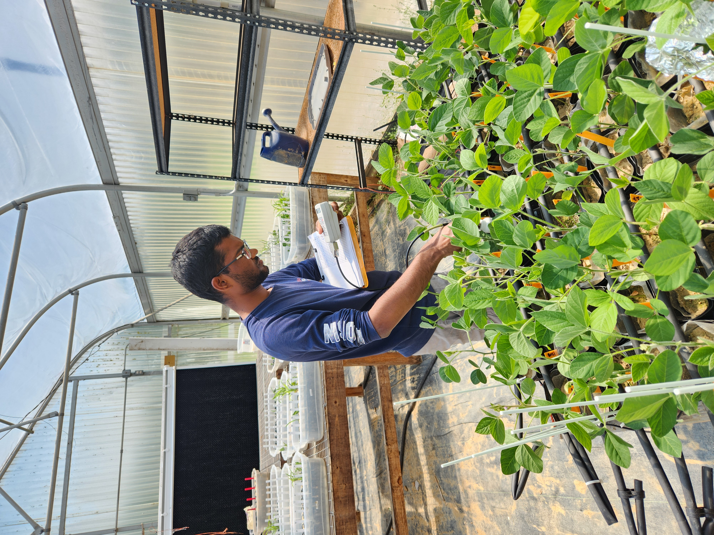
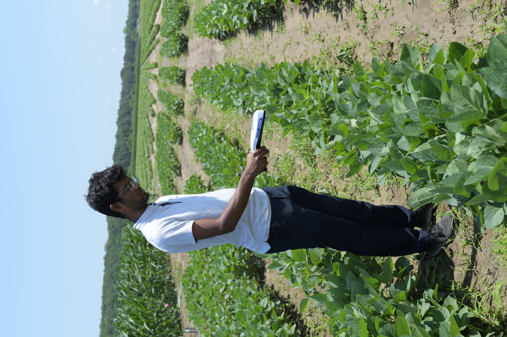
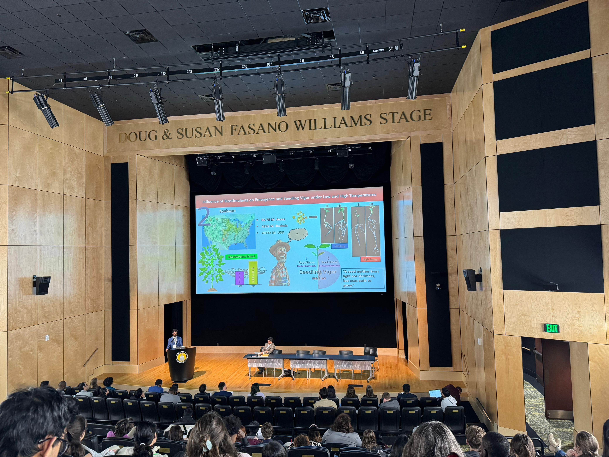
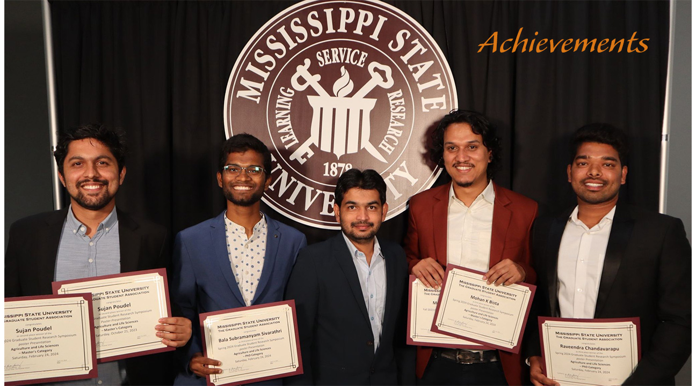

Hello, I'm
Bala S.
Sivarathri
Dynamic crop physiology researcher specializing in soybean resilience and stress mitigation at Mississippi State University. Proven leader with experience in coordinating research projects, mentoring first-year PhD students, and holding key roles in professional societies such as the ASA-CSSA-SSSA.
Who Am I
I am Bala Subramanyam Sivarathri, people prefer to call me "Bala". I hail from Southern India, a small coastal city called "Nellore". I earned my master's in crop physiology and an undergraduate degree from Acharya N.G. Ranga Agricultural University, Guntur, India.
Currently, I am working on my doctoral education at the Department of Plant and Soil Sciences, Mississippi State University, USA under the direction of Dr. Raju Bheemanahalli.
Education
Ph.D. in Agronomy
Dissertation: Strategies to Improve Resilience of Soybean to Abiotic Stresses
M.Sc. in Crop Physiology
Dissertation: Influence of Seed Priming and Micronutrients on Morpho-Physiological and Yield Parameters of Dry Direct Sown Rice (Oryza sativa L.)
B.Sc. in Agriculture

Skills
- Design and conduct field and greenhouse research using advanced methodologies
- Collect and analyze complex data with strong critical thinking and problem-solving skills (Data Analysis)
- Prepare detailed research reports, manuscripts, and scientific communications
- Coordinate projects efficiently while managing time and resources effectively
- Lead teams, guide fellow students in conducting research, and collaborate across disciplines
- Communicate effectively and manage conflicts to maintain productive research environments

Research & Publications

Manuscripts
- Sivarathri, B. S., Kodadinne Narayana, N., Bryant, C. J., Dhillon, J., Reddy, K. R., & Bheemanahalli, R. (2024). Influence of seed-applied biostimulants on soybean germination and early seedling growth under low and high temperature stress. Plant Physiology Reports. DOI
- Thingujam, D., Majeed, A., Sivarathri, B. S., Narayana, N. K., Bista, M. K., Cowart, K. E., Knight, A. J., Pajerowska-Mukhtar, K. M., Bheemanahalli, R., & Mukhtar, M. S. (2025). The impact of soybean genotypes on rhizosphere microbial dynamics and nodulation efficiency. International Journal of Molecular Sciences, 26(7), 2878. DOI
- Poudel, S., Valsala Sankarapillai, L., Sivarathri, B. S., Hosahalli, V., Harkess, R. L., & Bheemanahalli, R. (2025). Characterization of cowpea genotypes for traits related to early-season drought tolerance. Agriculture, 15(10), 1075. DOI
CSA News
- Om Prakash, G., Sofia, C., Jessica, B., Sivarathri, B.S., Seelam, R.T., Kaushal, S., Khanal, B., & Joshi, P. Agronomic approaches for enhancing nutritional value in food crops. CSA News, 69(6), 36-47. Link
Abstracts (2025)
- Sivarathri, B. S., et al. (2025). Priming soybean seeds with biostimulants and gibberellic acid: A strategy to enhance cold tolerance [Poster presentation, 1st Place]. 89th Annual Meeting, Mississippi Academy of Sciences, Biloxi, MS.
- Sivarathri, B. S., et al. (2025). Soybean root architecture and nodulation under drought stress [Oral presentation]. 89th Annual Meeting, Mississippi Academy of Sciences, Biloxi, MS.
- Kodadinne Narayana, N., et al. (2025). Influence of winter cover crops on corn and cotton production under rainfed environment [Poster presentation]. 89th Annual Meeting, Mississippi Academy of Sciences.
- Sivarathri, B. S., et al. (2025). Investigating the impact of biostimulants on physiology and seed yield under heat stress [Poster presentation]. Spring Graduate Research Symposium, Mississippi State University.
- Sivarathri, B. S., et al. (2025). Genetic diversity in roots and nodules of soybean under water deficit [Oral presentation]. Spring Graduate Research Symposium, Mississippi State University.
- Poudel, S., et al. (2025). Effects of reduced irrigation on cowpeas: Plant health, leaf reflectance, and growth [Poster presentation]. Spring Graduate Research Symposium, Mississippi State University.
- Sivarathri, B. S., et al. (2025). Priming soybean seeds to enhance cold tolerance [Poster presentation]. Southern Branch American Society of Agronomy, Irving, TX.
- Sivarathri, B. S., et al. (2025). Effect of water deficit on soybean root morphology and nodulation [Oral presentation]. Southern Branch American Society of Agronomy, Irving, TX.
- Poudel, S., et al. (2025). Effects of reduced irrigation on cowpeas: Plant health, leaf reflectance, and growth [Poster presentation]. Southern Branch American Society of Agronomy, Irving, TX.
Abstracts (2024)
- Sivarathri, B. S., et al. (2024). Does seed priming with biostimulants improve soybean early seedling growth under low temperature? [5-Min rapid oral and poster presentation, 2nd Place]. ASA, CSSA, SSSA International Annual Meeting, San Antonio, TX.
- Sivarathri, B. S., et al. (2024). Response of soybean roots and nodules to water deficit conditions [Oral presentation]. ASA, CSSA, SSSA International Annual Meeting, San Antonio, TX.
- Sivarathri, B. S., et al. (2024). Do biostimulants reduce the negative effects of heat stress on soybeans? [Poster presentation]. ASA, CSSA, SSSA International Annual Meeting, San Antonio, TX.
- Kodadinne Narayana, N., et al. (2024). Selecting cover crops for enhanced soil carbon storage: A root trait approach [Poster presentation]. ASA, CSSA, SSSA International Annual Meeting.
- Madapakula, A., et al. (2024). Development of genetic coefficients for major maturity group varieties of soybean in Mississippi [Poster presentation]. ASA, CSSA, SSSA International Annual Meeting.
- Hosahalli, V., et al. (2024). Biostimulants to alleviate reproductive stage drought stress in soybean [Oral presentation]. ASA, CSSA, SSSA International Annual Meeting.
- Sivarathri, B. S., et al. (2024). Effects of temperature stress and biostimulants on root and shoot parameters of soybean [Poster presentation, 2nd Place]. Fall Graduate Research Symposium, Mississippi State University.
- Sivarathri, B. S., et al. (2024). Response of soybean roots and nodules to water deficit [Oral presentation]. Fall Graduate Research Symposium, Mississippi State University.
- Sivarathri, B. S., et al. (2024). Can seed priming with biostimulants boost soybean germination? [Poster presentation, Honorable Mention]. 6th MAS Summer Research Symposium.
- Kodadinne Narayana, N., et al. (2024). Deciphering crop responses to water deficit stress during the vegetative stage [Poster presentation]. 6th MAS Summer Science & Engineering Symposium.
- Sivarathri, B. S., et al. (2024). Influence of biostimulants on emergence and seedling vigor under low and high temperatures [Oral and poster presentations, Honorable Mentions]. 88th MAS Annual Meeting.
- Sivarathri, B. S., et al. (2024). Characterization of root trait variability in soybean [Oral presentation]. 88th MAS Annual Meeting.
- Sivarathri, B. S., et al. (2024). Influence of biostimulants on emergence and seedling vigor under low and high temperatures [Poster presentation]. Southern Branch of ASA, Atlanta, GA.
- Sivarathri, B. S., et al. (2024). Characterization of root trait variability in soybean [Oral presentation]. Southern Branch of ASA, Atlanta, GA.
- Usman, M., et al. (2024). Estimation of root phenotypic traits through computer vision and deep learning: A case study on soybean [Oral presentation]. American Society of Agricultural and Biological Engineers Annual International Meeting, Anaheim, CA.
Abstracts (2023)
- Sivarathri, B. S., et al. (2023). Influence of biostimulants on soybean seedling vigor traits under low and high temperatures [Poster presentation]. ASA, CSSA, SSSA International Annual Meeting, St. Louis, MO.
- Sivarathri, B. S., et al. (2023). Can biostimulants improve soybean germination under low and high temperatures? [Poster presentation]. MAS Summer Science and Engineering Symposium, Mississippi State University.
Achievements & News

Awards
- First place, Poster, 89th Annual Meeting, Mississippi Academy of Sciences, Biloxi, MS, 2025
- Second place, 5 min rapid Oral and Poster presentation, ASA, CSSA, SSSA International Annual Meeting, San Antonio, TX, 2024
- Second place, Poster, Fall Graduate Research Symposium, Mississippi State University, 2024
- Third place, Poster, Spring Graduate Research Symposium, Mississippi State University, 2024
Honorable Mentions
- Poster, 6th MAS Summer Research Symposium, Mississippi State University, 2024
- 3-Minute Oral Presentation, 88th MAS Annual Meeting, Hattiesburg, MS, 2024
- Poster, 88th MAS Annual Meeting, Hattiesburg, MS, 2024
Competitive Internship
- Skill Development Internship, Oklahoma State University, June 2019
Leadership & Service
Current Leadership Roles
- Chair, ASA-CSSA-SSSA Graduate Student Committee (2026): Leading the Graduate Student Committee & Annual Meeting planning committee.
- Vice-Chair, ASA-CSSA-SSSA Graduate Student Committee (2025-2026): Organizing chair for Special Sections & Organizing Co-Chair for Networking Sections.
Previous Leadership Roles
- Secretary, Graduate Student Association, MSU (2024-2025).
Service
- Graduate guide mentor, one semester, 2025
- Judge, undergraduate research symposium, Mississippi State University, 2024-2025
- Judge, high school and lower school science fairs, Mississippi State University, Starkville, 2025
- Volunteer, food drives with Kiwanis International and INDICO, 2024-2026
- Event setup for Research Symposium, Summer Symposium, and Annual meetings (MAS), 2023-2024
- Habitat for Humanity volunteer, house building, Stillwater, Oklahoma, 2019
- National Student Service volunteer, weekly in India, 2016-2020
Collaborate
I am committed to advancing sustainable agriculture through innovative research, collaborative leadership, mentorship, and dedicated service. Interested in my research or potential collaborations? Let's connect.
Links: